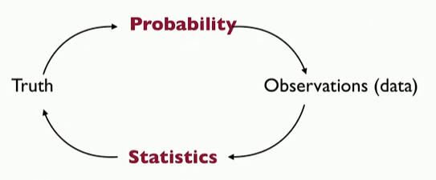
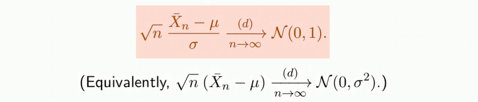
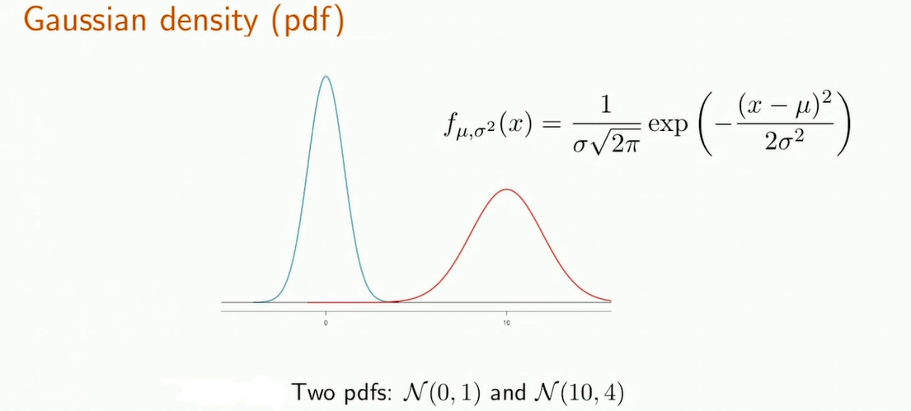
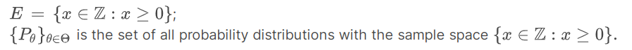

什么是统计？（What’s Statistics?）
现在是一个数据驱动的时代，所以深刻地理解数据分析核心的统计学显得尤为重要。
先明确一个问题，统计与数据科学的关系是什么？首先，很多数据科学中的机器学习算法本质上是一些统计原则的有效实现（后文会有具体介绍）。其次，从统计的角度上看：数据来自于一个随机过程。所以数据科学的目的是要从有限的数据中理解这个过程如何工作，并基于此做出对未来的预测或理解数据背后揭示的机理。换句话说，在数据科学中，我们需要进行统计建模。
简单来说，统计建模就是：复杂模型 = 简单模型 + 随机噪声。也就是说，一个好的统计模型包含两个部分，一个是简单的（可行的）过程模型，另一个是噪声的分布模型。
而为了理解上述统计学中的随机性（randomness），我们又离不开概率（Probability）的支持。那么概率与统计的关系/区别是什么？当随机过程是确定的（比如摇骰子时每一面出现的可能性是1/6），那么我们面对的就是一个概率问题；当随机过程中的参数需要被估计（由数据估计随机过程参数），那么我们面对的就是一个统计问题。如下图所示：

学好统计学离不开对概率的深刻理解，下面先复习相关的部分概率论知识。
概率论复习（Recap of Probability）
首先我们要明确，随机变量之间相互独立，且满足相同分布（Independent Identical Distribution, I.I.D.）是很多统计学内容的基础（如大数定理、中心极限定理等等），这个前提条件之后不再赘述。
统计学中很常见的操作就是求期望。用数据的期望来表征数据分布真实的平均的依据是什么？我们需要用到大数定理（Laws of large numbers, LLN）。
但这个定理并不能告诉我们我们的期望离数据真实的平均有多近（ How large is the deviation? ），这时候我们就需要用到中心极限定理（Central Limit Theorem, CLT）。

也就是说，红框中的左式极大概率的分布会在[-3, 3]之内（由标准正态分布决定，常数3可以依据对精度的要求自行决定），即：
$$
|bar(X_n)-\mu| <= 3\sigma/sqrt(n), with high Probability.
$$
所以依据中心极限定理，我们就能知道对于特定的样本大小 $n$ （$n$ 要足够大，常见如 $n>=30$），我们得到的期望偏离真正的平均的程度。
而当 $n$ 不够大，CLT无法适用时，我们则需要用到霍夫丁不等式（Hoeffding’s inequality）（这也是机器学习研究中很重要的理论基础）。使用霍夫丁不等式的前提条件是样本属于某一确定范围，即 $X \in [a, b]$ 。
也就是说，在不对样本数做要求情况下，我们可以知道满足某一特定精度要求 $\varepsilon$ 的（分布于某一确定范围内的）样本出现的概率。
此外要注意的是，相对于CLT，Hoeffding’s inequality会显得更加保守，也没有那么精确。举例来说，相同样本下，CLT估计出的偏差小于某一值的概率（如5%）要小于Hoeffding’s inequality估计的结果（如35%）。这也是为什么多数情况下大家不用其来进行统计陈述的原因。
回到中心极限定理CLT，它告诉我们的是当数据量足够大时，各种分布的数据的期望最终都会趋近于在真实平均值附近的一个高斯分布，这就显得高斯分布极其重要。

从概率角度看，高斯概率密度是一个钟形（bell shape）分布，且其下方与x轴包含的面积必然为1（包含了所有可能性），所以当高斯概率密度分布的方差变大，则其最大值必然变小（如上图中的红线之于蓝线）。而当样本取值趋向于负无穷或正无穷，高斯分布的概率会趋向于0（但不等于0，所以不做近似的话是不能应用Hoeffding’s inequality的）。而且高斯概率分布的累积分布函数（Cumulative Distribution Function， CDF）是无法解析表示的，其计算需要依赖计算器计算方法。
上面是高斯分布的简要描述，它还有什么有用的特性呢？假设$X~\mathnormal{N}(\mu, \sigma^2)$，有：
- 仿射变换（Affine Transformation）下的不变性。即对于任意实数$a, b$，有：
$$
a·X+b ~ \mathnormal{N}(a·\mu+b,a^2·\sigma^2)
$$
也就是说，对于一个高斯分布进行仿射变换，其结果仍然服从高斯分布。 - 标准化/归一化/Z-score。即：
$$
Z = (X-\mu)/\sigma ~ \mathnormal{N}(0,1)
$$
这一性质可方便我们进行查表（一般只有标准高斯分布的数值表）。 - 对称性。由上面的图可以显然得到。
概率的内容就先复习这么多，具体可以参见另外对概率论进行比较详尽讨论的文章。接下来我们开始进入正题：统计。
推测基础（Foundation of Inference）
首先明确统计推测的最终目标是确定观测数据的真实分布，具体而言，包含三个陈述：首先是估计（Estimation），其次是确定置信区间（Confidence Intervals），最后是假设检验（Hypothesis Testing）。
为了完成上面三个统计推测的陈述，首先我们要进行一次统计建模。那么首先，怎么描述一个统计模型？如下所示：
其中， $E$ 表示观测数据所在的样本空间（也是观测数据背后真实分布所有可能产生的结果）， $\left(\mathbb{P}{\theta}\right){\theta \in \Theta}$ 是一组基于 $E$ 的概率分布，而 $\Theta$ 则是统计模型的参数集。为了不过于抽象，下面举一个伯努利分布的实例（0-1分布）如下：
$$
\left({0,1},(\operatorname{Ber}§)_{p \in(0.2,0.4)}\right)
$$
在这个实例中，伯努利分布的参数$p$被限定在 $(0.2,0.4)$ 之间。
上面其实只是统计模型的一种类型，那么统计模型又可以怎么分类呢？首先是如上的参数模型（Parametric Model），其假设观测数据服从某种真实的分布（参数数量有限，如高斯分布、泊松分布、伯努利分布等等）。而另一种则就是非参数模型（Nonparametric Model）了，在这种模型里我们知道数据的分布存在，但不对数据分布进行可有限参数化描述的假设（或者说，数据分布的参数有无限个），下面是一个非参数模型的例子：

参数估计与置信区间（Parametric Estimation and Confidence Intervals）
在统计学中，基于观测数据计算某个估计值（如平均值、方差或其他形式）的函数，我们称为估计量（Estimator）。但随之而来有一个很重要的问题，我们由此得到的估计值与其对应真实值的差异有多大？这就引入了偏差（Bias）的概念：
$$
\operatorname{bias}\left(\hat{\theta}{n}\right)=\mathbb{E}\left[\hat{\theta}{n}\right]-\theta
$$
其中， $\mathbb{E}\left[\hat{\theta}_{n}\right]$ 代表我们的估计值，而 $\theta$ 代表着真实值。如果偏差为0，那么我们就说我们的估计无偏差（Unbiased）。但无偏差估计是否就是最好的？这边还要注意的是，这里的无偏差侧重点在均值上，也就是说，我们的估计值尽管均值与真实值没偏差，但其方差可能很大。